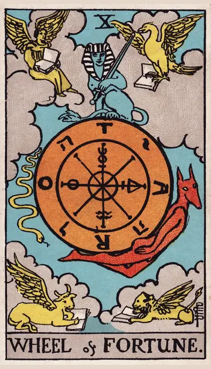

正位置運命の輪の正位置
キーワード：転機・好機・流れに乗る
恋愛
流れが良い方へ変わり、チャンスが巡ってくる時です。
相手の気持ちあなたとの出会いに、運命的なものを感じているようです。
この先関係が大きく前進する転機が訪れそうです。
アドバイスチャンスが来たら、迷わずつかみましょう。
気をつけること良い流れに甘えて、努力を忘れないように。
この先関係が大きく前進する転機が訪れそうです。
アドバイスチャンスが来たら、迷わずつかみましょう。
気をつけること良い流れに甘えて、努力を忘れないように。
人間関係
偶然の出会いやつながりが、良い縁になる時です。
相手の気持ちあなたとの縁を、大切にしたいと感じているようです。
この先新しい出会いが、良い変化をもたらしそうです。
アドバイス誘いには、できるだけ乗ってみましょう。
気をつけること運に任せすぎず、自分からも働きかけて。
この先新しい出会いが、良い変化をもたらしそうです。
アドバイス誘いには、できるだけ乗ってみましょう。
気をつけること運に任せすぎず、自分からも働きかけて。
仕事・学業
思わぬチャンスが舞い込み、状況が好転する時期です。
この先状況が好転し、大きなチャンスにつながりそうです。
アドバイス変化を恐れず、新しい流れに乗ってみましょう。
気をつけること調子の良い時こそ、次の準備を忘れずに。
アドバイス変化を恐れず、新しい流れに乗ってみましょう。
気をつけること調子の良い時こそ、次の準備を忘れずに。
お金
お金の流れが、良い方へ変わりやすい時です。
この先うれしい臨時収入がありそうです。
アドバイスチャンスが来たら、落ち着いて活かしましょう。
気をつけること運任せのお金の使い方はしないように。
アドバイスチャンスが来たら、落ち着いて活かしましょう。
気をつけること運任せのお金の使い方はしないように。
生活
暮らしに良い変化が訪れやすい時です。
この先思いがけない良い変化がありそうです。
アドバイス変化の流れに乗って、新しい暮らし方を試しましょう。
気をつけること変化に浮かれて、生活リズムを崩さないように。
アドバイス変化の流れに乗って、新しい暮らし方を試しましょう。
気をつけること変化に浮かれて、生活リズムを崩さないように。
今日の運勢
タイミングに恵まれ、物事がスムーズに進む日です。
この先思いがけない幸運がありそうです。
アドバイス気になったことは、先延ばしにせず行動しましょう。
気をつけること浮かれすぎて、うっかりミスをしないように。
アドバイス気になったことは、先延ばしにせず行動しましょう。
気をつけること浮かれすぎて、うっかりミスをしないように。
逆位置運命の輪の逆位置
キーワード：タイミングのずれ・停滞・予想外
恋愛
タイミングが合わず、すれ違いやすい時です。
相手の気持ちあなたに近づくタイミングを見計らっているようです。
この先タイミングが合えば、また流れが戻ってきそうです。
アドバイス今は無理に動かず、流れが変わるのを待ちましょう。
気をつけること焦って動くと、かえって状況が悪くなりそうです。
この先タイミングが合えば、また流れが戻ってきそうです。
アドバイス今は無理に動かず、流れが変わるのを待ちましょう。
気をつけること焦って動くと、かえって状況が悪くなりそうです。
人間関係
思いどおりにいかない出来事が起きやすい時です。
相手の気持ちあなたとの関係をどうするべきか、迷っているようです。
この先時間がたてば、状況は自然と落ち着きそうです。
アドバイス状況に逆らわず、柔軟に対応しましょう。
気をつけることうまくいかないことを、人のせいにしないように。
この先時間がたてば、状況は自然と落ち着きそうです。
アドバイス状況に逆らわず、柔軟に対応しましょう。
気をつけることうまくいかないことを、人のせいにしないように。
仕事・学業
流れが停滞し、なかなか進まない時期です。
この先準備をしておけば、次の好機を逃さずに済みそうです。
アドバイス今できる準備を進めて、次の流れに備えましょう。
気をつけること同じ失敗を繰り返さないよう、原因を見直しましょう。
アドバイス今できる準備を進めて、次の流れに備えましょう。
気をつけること同じ失敗を繰り返さないよう、原因を見直しましょう。
お金
予定外の出費が起きやすい時です。
この先しばらくすれば、流れが戻ってきそうです。
アドバイス急な出費に備えて、少し余裕を残しておきましょう。
気をつけること賭けごとのようなお金の使い方は控えましょう。
アドバイス急な出費に備えて、少し余裕を残しておきましょう。
気をつけること賭けごとのようなお金の使い方は控えましょう。
生活
予定外の出来事で、暮らしが乱れやすい時です。
この先流れが変われば、落ち着いていきそうです。
アドバイス予定には、余裕を持たせておきましょう。
気をつけること焦って、大きな決断をしないように。
アドバイス予定には、余裕を持たせておきましょう。
気をつけること焦って、大きな決断をしないように。
今日の運勢
予定外のことが起きやすい日です。
この先明日には流れが変わりそうです。
アドバイス予定には余裕を持たせておきましょう。
気をつけること慌てて決めたことは、あとで見直しが必要になりそうです。
アドバイス予定には余裕を持たせておきましょう。
気をつけること慌てて決めたことは、あとで見直しが必要になりそうです。
このページの文章は、アプリ「ひとやすみタロット」の結果に使っている文章です。アプリでは、あなたの相談や、カードが出た位置（今の状況・これからの流れ・アドバイス）に合わせて、この中から文章を選びます。逆位置の読み方は逆位置のことをご覧ください。
「運命の輪」が出たら、あなたの相談ではどう読む？
アプリでは、質問への答えに合わせて、カードの言葉をあなたの相談に合わせて届けます。
Android 対応・会員登録なし